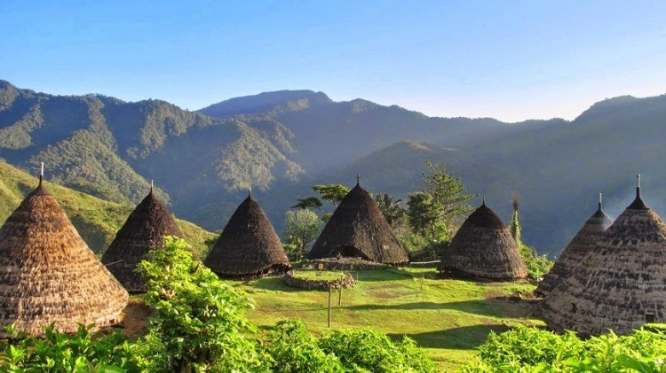

Wisata Indonesia
Indonesia memiliki pariwisata yang sangat beragam dan menakjubkan. Dari keindahan alamnya yang spektakuler seperti pantai-pantai yang memukau di Bali, Lombok, dan Raja Ampat hingga kekayaan budayanya yang luar biasa seperti Candi Borobudur dan Prambanan di Jawa, Indonesia menawarkan pengalaman yang luar biasa bagi para wisatawan.